The gallery of Holy Family Church Bethlehem reflects the spiritual, cultural, and community life of our parish. These moments capture worship, celebrations, and fellowship shared by our parish family.
Church & Altar
 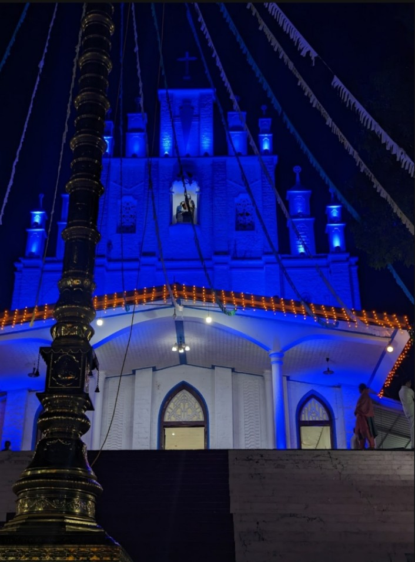
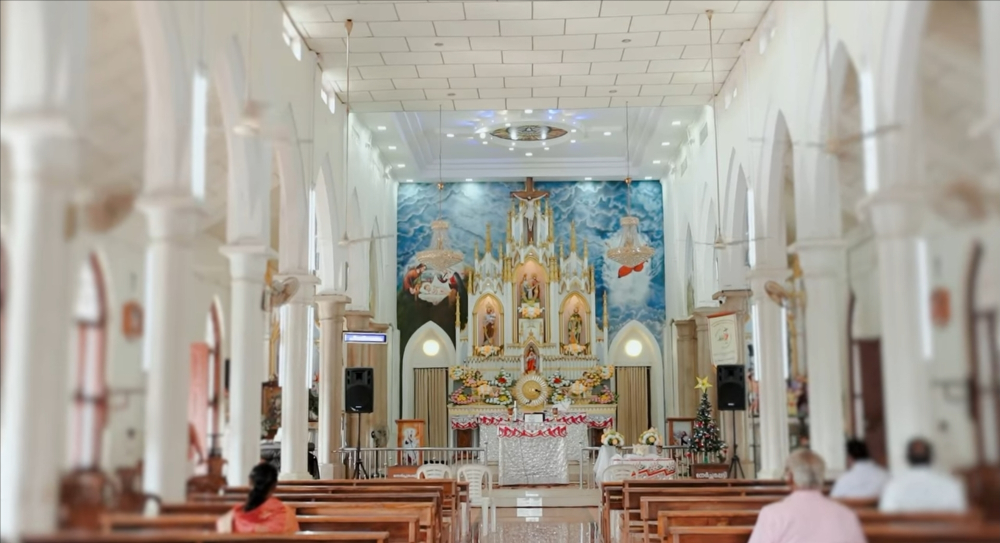
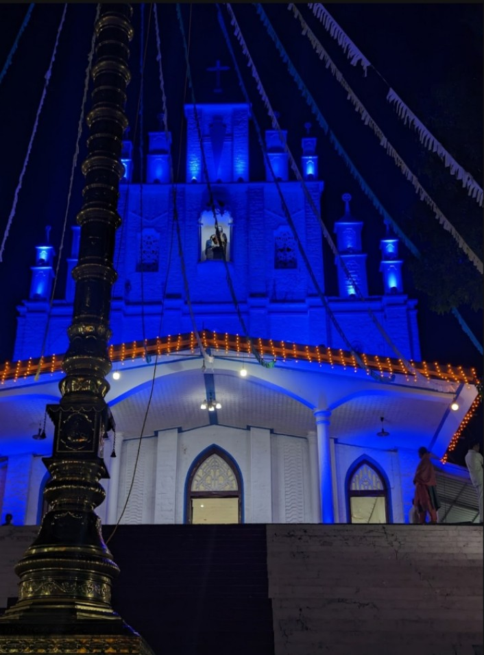
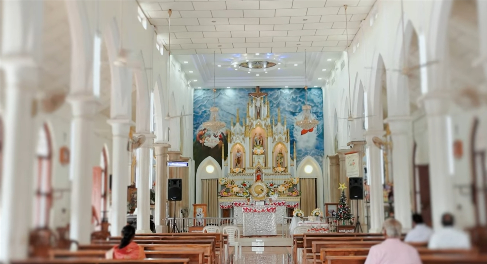
Holy Mass & Liturgical Celebrations
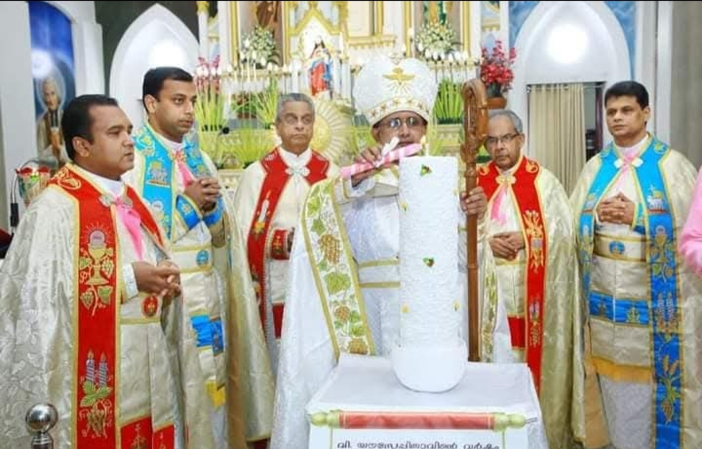
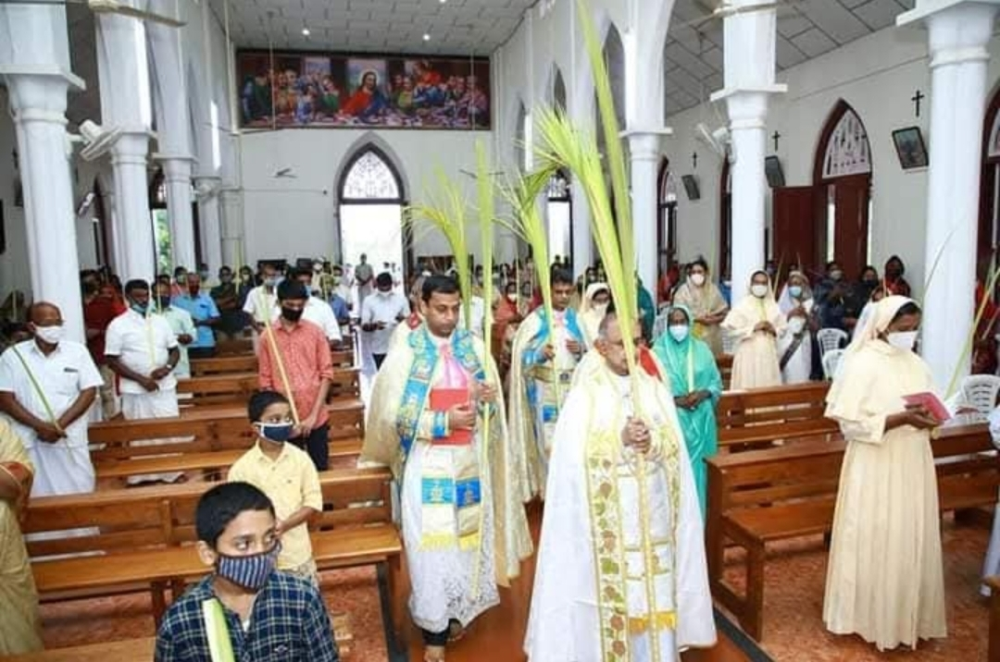
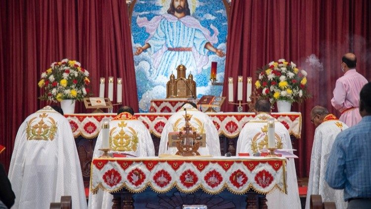
Feast Days & Major Celebrations
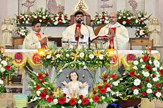

Sacramental Life
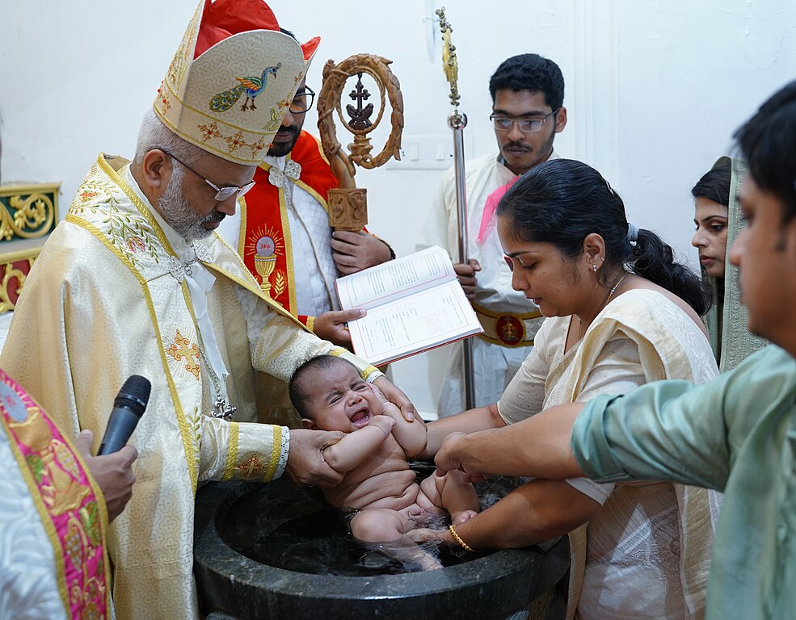
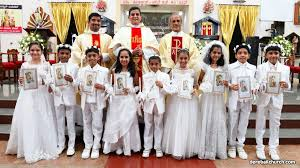

Youth & Children Activities
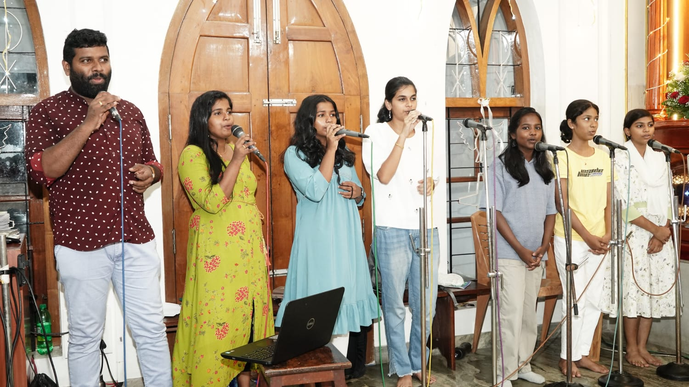